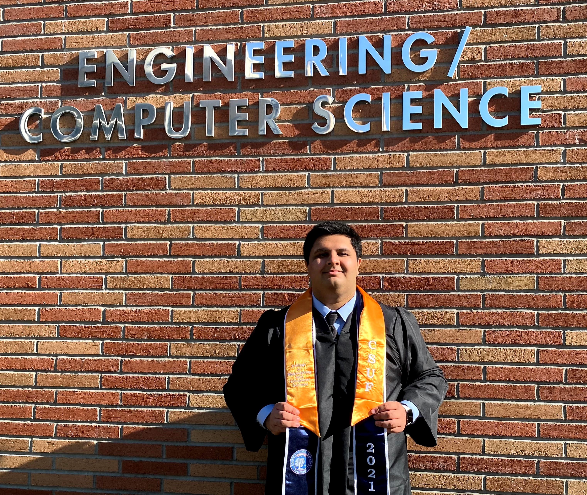
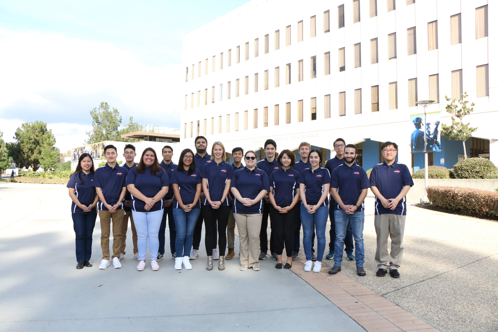
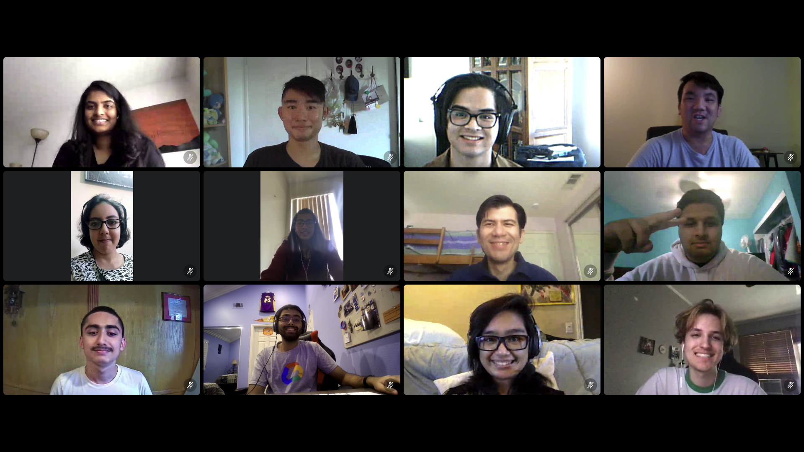

About Me

Yup, that handsome fellow right there is me. Hello stranger! My name is Sagar Joshi and I'm a graduate from
California State University, Fullerton (CSUF) with my Bachelor's in Computer Science. My goal in life is to be a part of a
team that constructs beneficial, efficient, and convienent software for consumers. I want to continue
innovating and improving software that could benefit others by assisting them with certain tasks and
making the process easier for them. Currently, I work at Ingram Micro as their IT Associate where I take part
of a rotational program where I work under multiple departments: Project Manangement Office (PMO), Information Technology,
Infrastructure, and Product Engineering. During my time at CSUF, I served as the Technical Lead for the Developer Student
Club (DSC), worked as a Supplemental Instruction (SI) Leader for the Mathematics department, and served as the Engineering
Ambassador for CSUF's Engineering and Computer Science campus. Outside of campus and coding, I love taking part of basketball
adult recreational leagues, listen to music, attend concerts/music festivals, and play with my dog Champ. If you would like to
learn more about me, you can find the links to my social media under the Contacts tab.
My next goal in life: Getting my masters and become a Project Manager.
Experience
IT Associate
Ingram Micro
June 2021 - Present
- - Currently taking part of a the New Grad Rotational Program at Ingram Micro
Web Intern
California State University, Fullerton
January 2021 - May 2021
- - Developed 8 new webpages using HTML, CSS, PHP, and React.js to enhance functionality and user experience
- - Debugged websites and performed troubleshooting prior to deployment
- - Analyzed user activity, website metrics, and trends
Mathematics Supplemental Instruction Leader
California State University, Fullerton
July 2020 - May 2021
- - Collaborated closely with 12 professors to develop student study programs based on weekly lessons covered
- - Guided 20 students to develop independent study skills by leading critical thinking workshops
- - Facilitated 30 virtual workshops and construct worksheets using TeX to prepare students for exams and quizzes
Undergraduate Research Assistant
California State University, Fullerton
January 2020 - June 2020
- - Researched on Twitter user's reactions on most recent forest fires from January 1st, 2019 to May 6th, 2020
- - Programmed a Python script to create spreadsheets with 681 collected tweets through Twitter API
- - Performed sentiment analysis through each dataset using R's tidy verse and tidy text libraries
Extracircular Activities
Engineering Ambassador

Engineering Ambassador Network at California State University, Fullerton
January 2020 - May 2021
- - Hosted 2 virtual information sessions and communicate with high school and transfer students on the advantages of pursuing Computer Science at California State University, Fullerton
- - Introduced students to Artificial Intelligence, demonstrate its impact in our society, and have students interact with a Google Lens demo
Technical Lead

Developer Student Club at California State University, Fullerton
November 2019 - May 2021
- - Taught 40 students mobile and web development skills that uses Google's web technologies by creating and hosting 2 hour-long technical workshops on YouTube
- - Collaborated and partnered with other universities Developer Student Clubs to determine what Google technologies should be promoted to our members
Projects
Here are some of my projects along with the link to their repository
Support Small Restaurants Locator (2021)
A React web application that highlights small restaurants around California State University, Fullerton's campus. Since California is opening up, this is a perfect
opportunity to promote and give the spotlight to smaller businesses that need the attention.
KanBan Project (2021)
A React web application where users can create their own personal KanBans. Utilized Python, React.js, and Twilio Sync
to create a multi-client KanBan Board.
Fake Reddit (2021)
A web application where users can partake in multiple forums and talk to users anonymously (Hence Fake Reddit). Created with PHP, HTML, CSS, and JavaScript to make
it possible for users to create the forums and comment on each of them. This is hosted on our school server, so it many taken down by the start of
Fall 2021 semester.
Gamer Search (2020)
Collaborated along with four members to create this web application that provides all a game's information. Built front-end using
HTML, CSS, and Bootstrap and utilized JavaScript to integrate and display RAWG API
Dungeons and Dragons Character Sheet Creator (2020)
A web application, created during Major League Hacking (MLH) Hackathon that focuses around developing an automatic fill-in character sheet for beginners playing Dungeons and Dragons.
Utilized HTML, CSS, and Bootstrap for the look of the website and capitalized JavaScript to implement DnD 5e API.
Data Defense (2020)
A Children's Typing Game with the intention to not only improve their typing skills, but learn vocabulary and spelling as well.
Game play: Shielded missiles will be shot at the player with a word and a picture of the word attached. Player’s are required to type the word that matches the upcoming missiles to break their shield, and are then able to destroy the missile for points. If the missile hits the player, they lose health.
Environment: Unity
Contact
Feel free to reach out and follow me using the links below. Also, check out my videos on the Developer Student Club
YouTube Channel when I hosted workshops about Google technologies and how to use them.